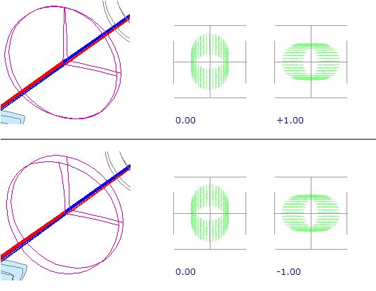
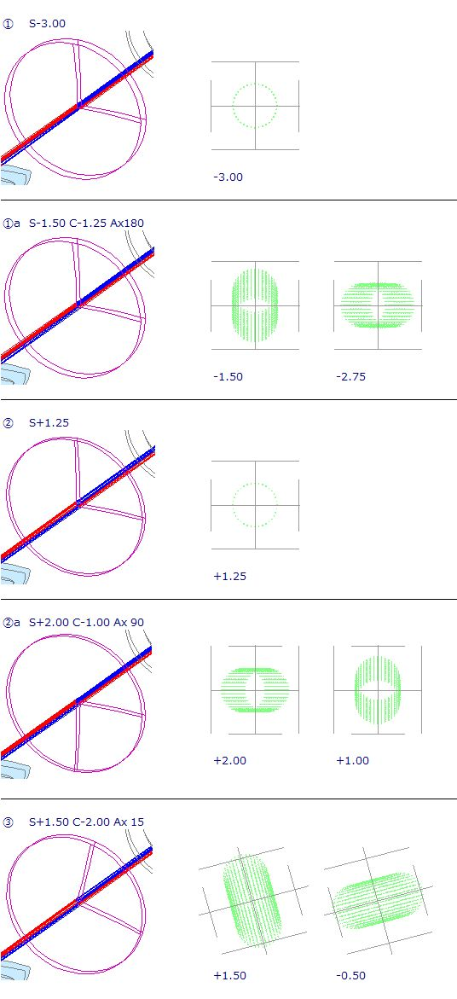

レンズメーターとは
レンズメーターはメガネレンズの屈折力を測る装置です。
そのからくりについてざっくりと説明します。難しい話は抜きです。
レンズについて一般の方にとってそれほど違和感がないのは、倍率とか焦点距離ではないかと思います。
-
倍率について
倍率はレンズを通して対象をどこまで引き寄せられるかを数値化したものです。
100m先の対象を50m先まで引き寄せることができれば(画角が)2倍になります。
勿論、レンズを通したからといって50m先に対象が存在する訳ではなく、
あたかも50m先に存在するように見えるという感じになります。
倍率にも縦・横・角という倍率があるのですが、今説明した倍率は角倍率といいます。
カメラで｢光学24倍｣などと表記されているのは、この角倍率を指します。
-
焦点距離について
焦点距離は、黒く塗った紙にレンズをかざして太陽光を受けて、紙までの距離を変化させたとき、
紙から煙が上がり始めた時(ピントの合う位置、焦点)の紙からレンズまでの距離のことです。
子供の頃、やったことありますよね。
メガネレンズの屈折力を扱う場合は、焦点距離が大きく関係してきます。
倍率にも種類があったように、焦点距離にも種類があります。
-
｢主点｣を基準にした焦点距離について
これが一般的なのですが、｢主点｣って何だとなると、話がややこやしくなります。
レンズの形状によっては、ここが主点ですと視覚的に確認できる場合もあるのですが、
普通はレンズの中とか外にあって視覚的にイメージできないことが多いです。
機会があれば、説明したいと思いますが、今回は割愛したいと思います。 -
直接レンズの後面から計った焦点距離について
これは後面頂点焦点距離(Back Focal Length：BFL)と呼ばれ、
カメラなどでも焦点距離はレンズ系の最後面からフィルム(今ではイメージセンサーですね)までの距離を指します。
BFLの単位はmmが一般的です。
主点と違い、距離を視覚的にイメージできるメリットがあります。
メガネレンズの屈折力は、[1 / BFL] で定義されます。BFLの単位がmであることが特徴です。
-
例えば、BFLが1m(1000mm)の場合は屈折力は1Diopter(普通は"D"と略記します)になります。 0.5m(500mm)なら2Dとなります。
屈折力は度数または度とも表現されます。
｢このレンズの度数は2Dです。｣とか、｢このレンズの度は2Dです。｣等々。
BFLを測ることができれば、屈折力が求まります。
では、メガネレンズは太陽光などを当ててレンズの裏面から焦点までの距離を
メジャーなどで実測するのでしょうか？
-
大変ですが、1Dや2Dのレンズならば、やってやれないことはなさそうに思えます。
1Dや2Dのレンズは両側が膨らんだ凸レンズです。
レンズというと凸レンズをイメージしがちですが、
両側が凹んだレンズもあります。ここでまたざっくりとした話になりますが、
メガネレンズの場合、凸レンズは遠視の補正に使われます。
一方、近視の補正には凹レンズが使用されます。
どちらも同じくらいメガネではポピュラーなレンズです。ところが、凹レンズは太陽光などを当てても焦点らしきものができません。
でも、凹レンズにも焦点がありBFLは存在します。ここで初めて図を使います。
図1は凸レンズと凹レンズの焦点とBFLの関係を示しています。
図1
凸レンズの場合は、平行な光線がレンズで屈折して焦点を結びます。
レンズの裏面から焦点までの距離がBFLになります。凹レンズの場合は、平行な光線はレンズで屈折した後、広がってしまいます。
しかし、広がった光線を逆に辿ると、1点で交わることが分かります。
これが凹レンズの場合の焦点になります。凹レンズの裏面から焦点までの距離が1mの場合は、凸レンズの時と同様に1Dになります。
しかし、これでは凸レンズと凹レンズの区別ができないので、以下のように改めます。
凸レンズのBFLは[+]の符号をつけます。
凹レンズのBFLは[-]の符号をつけます。凸レンズの1D、2Dは、以後+1D、+2Dのように表記します。
凹レンズの場合は、-1D、-2Dのように表記します。さて、 凸レンズならばBFLは何とかメジャーで測れそうですが、
凹レンズでは無理そうです。
でも、主点を基準にした焦点距離とは異なり、計算する必要はありません。
もう一つメガネレンズで重要なことがあります
-
メガネは、それを必要とする人ごとに右眼と左眼に合わせたレンズを使用する必要があります。
つまりオーダーメイドです。
メガネを作るときは、使用するレンズの度数が正確であるかどうかを確認する作業が必須になります。
近視の人が使うメガネを作るときでも、レンズの度数の確認をしなければならない訳です。
それを測定する術を提供するツールがレンズメーターです。 -
例によって、ざっくり説明します。
ここからの図はレンズメーターシミュレーションツール(SRTLMと略記します)の図を使います。
光線束の幅が狭く見づらいですが、諸事情によりこれ以上幅を広げることはできません。
これで我慢して頂きたいと思います。図2-1はレンズメーターに屈折力0Dのレンズがセットされているときのイメージです。
ターゲット(いわゆる光源です)から出た光線は コリメーター系前半(光線を平行にする装置：図では左手前の２枚のレンズ)で屈折して、
平行にな光線になります。
光線は屈折力0Dのレンズでは屈折せずに、平行なまま右奥の２枚のレンズ(対物レンズ系)に進みます。 そして、対物レンズ系で屈折してピントグラスに焦点を結びます。
このときのターゲットの位置をターゲット基準位置とします。
図2-1
① ターゲット 光源の前のピンホール(測定に必要な光線を通過させるためのフィルター) ② コリメーター系前半 ターゲット基準位置(0.00)から出た光線を平行にする ③ コリメーター系後半 被検レンズ ④ コリメーター系全体 ターゲットから出た光線を平行にする(コリメーター系前半と被検レンズで構成される) ⑤ 対物レンズ系 平行な光線が入射してきたときはピントグラスに焦点を結ばせる ⑥ ピントグラス 被検レンズの像が投影される場所(ピントが合っている/合っていない場合あり) 図2-2はレンズメーターに+5Dのレンズがセットされた場合のイメージです。
ターゲットから出た光線はコリメーター前半で屈折して、平行にな光線になります。
しかし、その右奥の+5Dのレンズで更に屈折して(右奥のどこかにピントを結ぶような)収束光線に変化します。
そして、右奥の対物レンズ系で屈折してピントグラスの手前で焦点を結び、光線は発散に転じます。
そのため、ピントグラス上ではピントが合わず、ぼけた状態になります。
図2-2のピントグラス正面図では点ではなく、面積を持っていることが確認できます。
図2-2
+5Dのレンズをセットして、ピントグラスで焦点を結ばせるためには、ターゲットを移動させる必要があります。
レンズをセットしなかった時は、平行な光線が対物レンズ系に達していたことを考えると、
ターゲットを少し右に移動させれば、+5Dのレンズを通過した後、平行な光線にすることができます。図2-3参照。
図2-3
被検レンズ(+5Dのレンズのことです)を通過した後、光線は平行になります。
ということは被検レンズに向かっている光線を逆に辿ると、1点で交わるはずです。
光線の幅は違いますが、図1を左右反転させれば全く同じ状態になっているのがお分かり頂けるでしょうか？
レンズメーターもしっかりBFLを求めているのです。
表だってBFLは出てきませんが、BFLが求められたときのターゲットの位置が重要になります。
このときのターゲットの位置をターゲット+5D位置とします。図2-4はレンズメーターに-5Dのレンズがセットされた場合のイメージです。
ターゲットから出た光線はコリメーター前半で屈折して、平行にな光線になります。
平行にな光線になります。
しかし、その右奥の-5Dのレンズで更に屈折して(左手前のどこかにピントを結ぶような)発散光線に変化します。
そして、右奥の対物レンズ系で屈折しても、ピントが合うのはピントグラスの後方になります。
そのため、ピントグラス上ではピントが合わず、ぼけた状態になります。
図2-4のピントグラス正面図では点ではなく、面積を持っていることが確認できます。
図2-4
-5Dのレンズをセットして、ピントグラスで焦点を結ばせるためには、ターゲットを少し左に移動させる必要があります。
図2-5は被検レンズ(-5Dのレンズのことです)で屈折した後、平行な光線になって対物レンズ系に達するように、
ターゲットを移動させたものです。
図2-5
凹レンズを被検レンズとした場合も、被検レンズ屈折した光線は平行になります。
ということは被検レンズに向かっている光線を辿ると、1点で交わるはずです。
光線の幅は違いますが、図1を左右反転させれば全く同じ状態になっているのがお分かり頂けると思います。
凹レンズでもレンズメーターはしっかりBFLを求めています。
凸レンズの時と同様に、このときのターゲットの位置をターゲット-5D位置とします。 -
以上から、レンズメーターはターゲットを移動させることでレンズのBFLを求めることができ、
その移動量をレンズの屈折力に対応させることができそうであることが分かってきました。-
被検レンズがセットされていない(度数0のレンズがセットされている)場合
ターゲットの位置：ターゲット基準位置
被検レンズに向かう光線：平行このとき、BFLは∞
ターゲット位置の屈折力換算0.00D -
被検レンズが+5Dの場合
ターゲットの位置：ターゲット基準位置より+5D分右側へ移動
被検レンズに向かう光線：被検レンズの手前200mmで交わるこのとき、BFLは+200mm ターゲット位置の屈折力換算+5.00D
-
被検レンズが-5Dの場合
ターゲットの位置：ターゲット基準位置より-5D分左側へ移動
被検レンズに向かう光線：被検レンズの後方200mmで交わるこのとき、BFLは-200mm ターゲット位置の屈折力換算-5.00D
-
レンズメーターについて、本当にざっくりとお話ししました。
-
実際のレンズメーターにはここでお話ししたような結像状態は表示されません。
レンズメーターの外観を図3左に示します。 -
被検レンズ受けに測りたいレンズをセットします。
一番右のアイピースからのぞき込むことでピントグラスを見ることができます。
測定ダイヤルを回すことで、ターゲットが移動します。
ピントが合ったときの被検レンズの像と屈折力(ターゲットの移動量の屈折力換算)がピントグラスに投影されます。
図3右はSRTLMで描画されるピントグラスと被検レンズの像(この場合は、球面レンズのピントが合った状態)を示しています。黄緑色の点が中心から定距離の円周上に描かれています。これが被検レンズの像で、コロナ像(この図は球面レンズの場合)と呼ばれるものです。
※SRTLMでは被検レンズの屈折力は｢ターゲット位置｣に表示されるので、ピントグラスには描画されません。
図3
興味を持たれた方は、実際にSRTMを試してみて下さい。
その前に、メガネレンズの特徴について、例によって
ざっくりとお話しします。
メガネレンズはカメラなどに用いられるレンズとは異なり、眼の屈折異常を1枚のレンズで補正するためにユニークな構造を持っています。
-
眼の屈折異常と補正レンズの関係を以下に示します。
表1 No. 眼の屈折異常 補正するメガネレンズの構成 補正するメガネレンズの表記例 補足 ① 近視 球面レンズ S-3.00 コロナ像は1カ所でピントを結ぶ ①a 近視 + 乱視 球面レンズと円柱レンズ S-1.50 C-1.25 Ax180 コロナ像は2カ所でピントを結ぶ ② 遠視 球面レンズ S+1.25 コロナ像は1カ所でピントを結ぶ ②a 遠視 + 乱視 球面レンズと円柱レンズ S+2.00 C-1.00 Ax90 コロナ像は2カ所でピントを結ぶ ③ 混合乱視 球面レンズと円柱レンズ S+1.50 C-2.00 Ax15 コロナ像は2カ所でピントを結ぶ ここで乱視と円柱レンズいう新しい言葉が出てきました。
Axも初めて出てきました。
近視と遠視は図3に示したような球面レンズで補正することができます。
一方、乱視(※)は円柱レンズまたは球面レンズと円柱レンズで補正します。
乱視眼にはメガネレンズで補正できる正乱視と、補正が難しい不正乱視がありますが、 ここでは正乱視のみを対象とします。
図4に(+)円柱レンズと(-)円柱レンズの結像状態を示します。
図4
不思議なことに2カ所でピントが合い、コロナ像は点々ではなく線のように伸びています。
注意すべきは、ピントが合ったときの線の方向が直交していることです。
円柱というだけに図4は上下とも0°方向の屈折力は0.00です (上のレンズの向きを変えて、下のレンズに重ねると図2-1の度数0のレンズと同じ形状になります)。
0°方向は円柱レンズの軸と一致します。
光線は円柱レンズを通過したとき、90°方向には屈折しますが、0°方向には屈折しません。
図4上では+1.00(図4下では-1.00)の時にピントが合ったときのコロナ像の線状に伸びた方向は円柱レンズの軸方向と一致しています。
そこで、これからはコロナ像が線状に伸びた場合は、その方向を軸方向と呼ぶことにします。
レンズの表記に使われているAxは円柱レンズの軸方向を表します。図4(上下とも)では0.00でピントが合ったとき、90°方向には1.00D分線状に伸びたボケた状態になります。
図4上では+1.00(下では-1.00)でピントが合ったとき、180°方向には1.00D分ボケた状態になります。
これが、コロナ像が線状になった理由です。
図5
図5左は1.00Dの円柱レンズのピントが合ったとき、右は球面レンズが1.00D分ボケたときです。
円柱レンズは1方向にだけボケますが、球面レンズは全方向にボケています。しかし、ボケの量はどちらも同じです。眼の屈折異常のうち乱視は円柱レンズで補正します。
補足
円柱レンズの形状を考えればお気づきになると思いますが、
ある方向の屈折力がMaxで、それと直交した方向の屈折力はゼロです。
ある方向を0°とすると、直交方向は90°です。
ある方向0°は180°でもあります(同様にある方向90°は270°でもあります)。
詳しい説明は省きますが、円柱レンズの屈折力は180°周期で一周します。
メガネレンズでは軸方向が0°の場合、180°と表現する慣習があります。
以後、軸方向0°の場合は180°と表記することにします。 -
表1には眼の屈折異常に｢近視 + 乱視｣とか｢遠視 + 乱視｣というのがあります。
これらの屈折異常を補正するには近視や遠視を補正する球面レンズと、乱視を補正する円柱レンズの2枚を重ね合わせる必要があります。
メガネレンズはこれをどのようにして1枚のレンズにまとめているのでしょう？-
円柱レンズの形状をちょっと工夫してみます。
図6のレンズ断面形状を注意して見て下さい。図4と比べてレンズ前面がカーブしていることが分かると思います。
裏面は前面のカーブに倣っています。
図4の裏面は円柱形状でしたが図6の裏面はある方向のカーブが強く、それと直行した方向のカーブが弱くなっています。
このような形状をトーリックと呼びます。｢樽状の｣或いは｢円環状の｣という意味です。
図6
図6は一方でピントが合ったときの度数は0.00ですが、表1を以下のように書き換えれば、 全て1枚のレンズで補正できることがお分かり頂けると思います。
-
表1のレンズを以下に示します。

図7
-
-
最後に、メガネレンズの度数表示には以下の3通りの方法があることを説明します。
なんで3通りもあるのか、不思議に思われるかもしれませんが、いろいろな事情があったものと思われます。表2 No. 表示法 例 ① C C 表示 C-1.75 Ax90 C-3.75 Ax180 ② S C(-)表示 S-1.75 C-2.00 Ax180 ③ S C(+)表示 S-3.75 C+2.00 Ax90 -
①～③は同値です。
-
②と③は、Sで示される球面レンズとCで示される円柱レンズを重ね合わせれば、
①の2枚の円柱レンズを重ね合わせたときと同じ屈折力になるのです。 -
それぞれの表示へは｢度数転換｣と呼ばれる簡単な計算で行うことができます。
表3に転換例を示します。 -
レンズメーターで直接測定できるのは①の[C C]表記です。
表3 ①→② S プラス側の屈折力 -1.75 C マイナス側の屈折力からプラス側の屈折力の差 -2.00 -3.75 - (-1.75) Ax マイナス側のAx 180 ①→③ S マイナス側の屈折力 -3.75 C マイナス側の屈折力からプラス側の屈折力の差 +2.00 -1.75 - (-3.75) Ax プラス側のAx 90 ②→③
③→②S マイナス側の屈折力とプラス側の屈折力の和 -3.75 -1.75 + (-2.00) C ①のC屈折力の符号を変える -2.00 +2.00 Ax ①のAxに90を加える(180°を超えたら180°を引く) 180 360->180 -